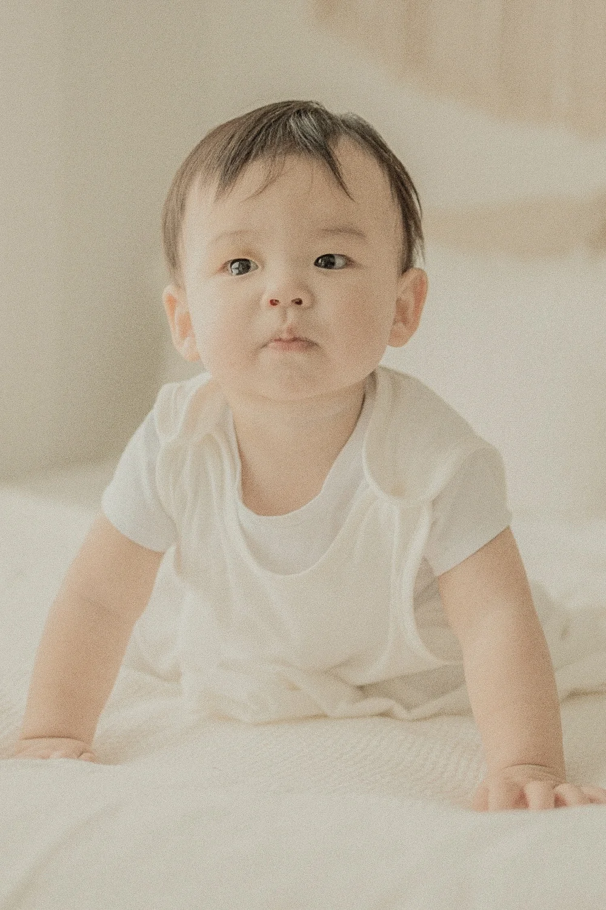

Transition Guide
꿀잠 속싸개와 아기슬리핑백
언제 사용하는게 좋을까요?
1단계 : 꿀잠 속싸개
뒤집기 시작 전
포근한 감싸기
2단계 : 꿀잠 슬리핑백
뒤집기 시작 후
자유로운 팔 움직임


IMPORTANT
아기가 뒤집기를 시작하면 반드시 꿀잠 속싸개 사용을 중단하고 아기슬리핑백으로 전환해야 합니다.
아기의 발달 단계를 주의 깊게 관찰하고 적절한 시기에 슬리핑백으로 전환하여 안전한 수면 환경을 제공하세요.